Este sistema foi desenvolvido por Renan Farias com foco em gamificação educativa. Ele permite a gestão de pontuação de alunos via localStorage com rankings, histórico e exportação de dados, contato: LinkedIn de Renan Farias.
localStorage